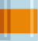
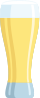
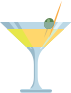
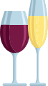

<!--
  Generated template for the DrinkPage page.

  See http://ionicframework.com/docs/components/#navigation for more info on
  Ionic pages and navigation.
-->
<ion-header>

  <ion-navbar>
    <ion-title>drink</ion-title>
  </ion-navbar>

</ion-header>


<ion-content padding>
  <div class="conso">
    <h1><b>J'ai consommé :</b></h1>
    <div class="categ">
      <div (click)="listing('Aperitif')">
        
        <label>Apéritif</label>        
      </div>
      <div (click)="listing('Biere')">
        
        <label>Bière</label>
      </div>
      <div (click)="listing('Cocktail')">
        
        <label>Cocktail</label>
      </div>
      <div (click)="listing('Digestif')">
        
        <label>Digestif</label>
      </div>
      <div (click)="listing('VinChampagne')">
        
        <label>Vin / Champagne</label>
      </div>
    </div>
</div>
<button class="suivant" ion-button icon-right (click)="toTime()">Suivant</button>
</ion-content>
